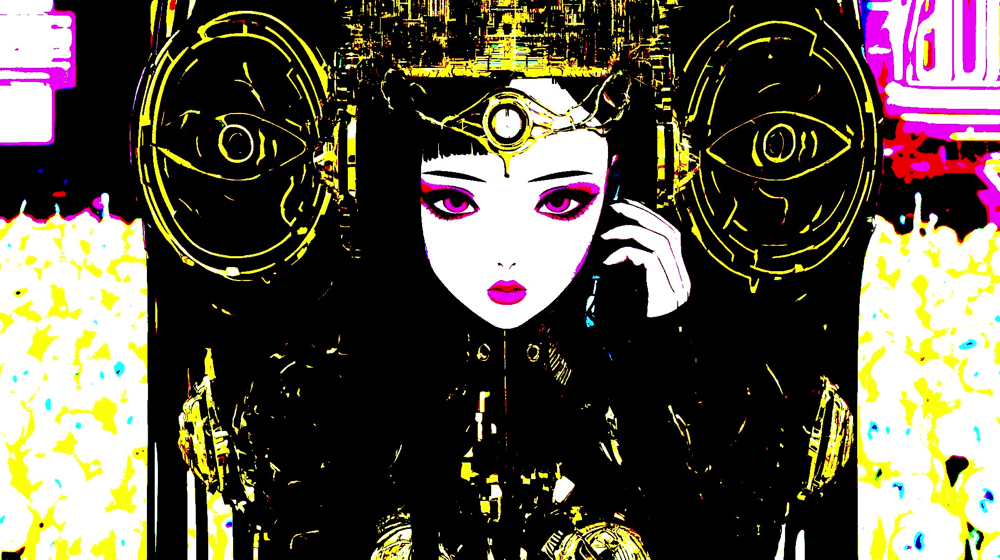

☆ YUME Universe Labo ☆
Καλώς ήρθατε στον κόσμο του σκότους.

News
【2026.06.23】Η σελίδα καταγραφής ενημερώνεται γενικά καθημερινά.The log page is generally updated daily.ログページは基本的に毎日更新です。
【2026.06.22】Αποφάσισα να κάνω βίντεο μία φορά την εβδομάδα.I decided to make videos once a week.動画作成は週一にした。
About
―― ☆ αυτο-εισαγωγή ☆ ―― ☆ όνομα： Σ will 666 ☆ Κατοχή： 魔術師 ☆ Είδος έκφρασης： ブレイクコア｜サイバーパンク｜ポスト・アポカリプス ☆ Μια λέξη： Χρησιμοποιώ το breakcore ως μέσο έκφρασης, αντλώντας παράλληλα από τις ευαισθησίες του Weirdcore και του Vaporwave. Weirdcore/Vaporwave sensibilities. Driven by Breakcore. ウィアードコア／ヴェイパーウェイヴの感性。ブレイクコアによって駆動する。